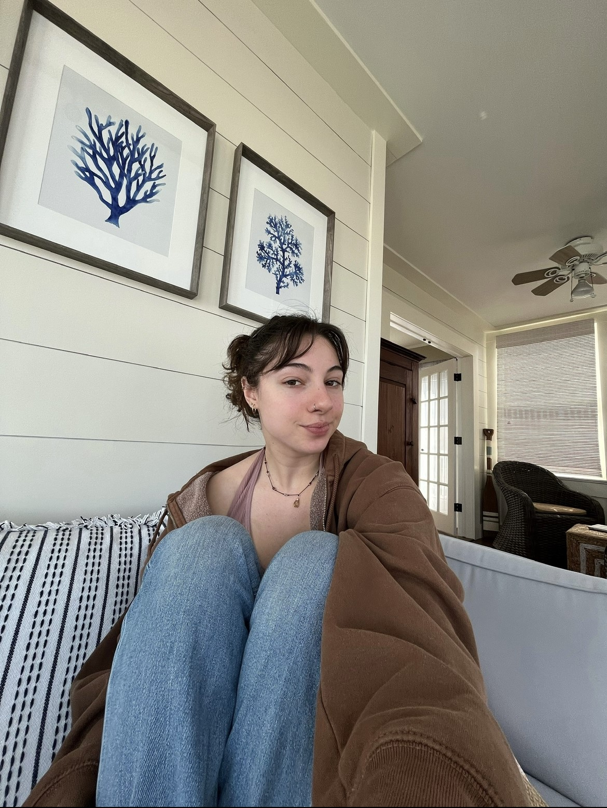
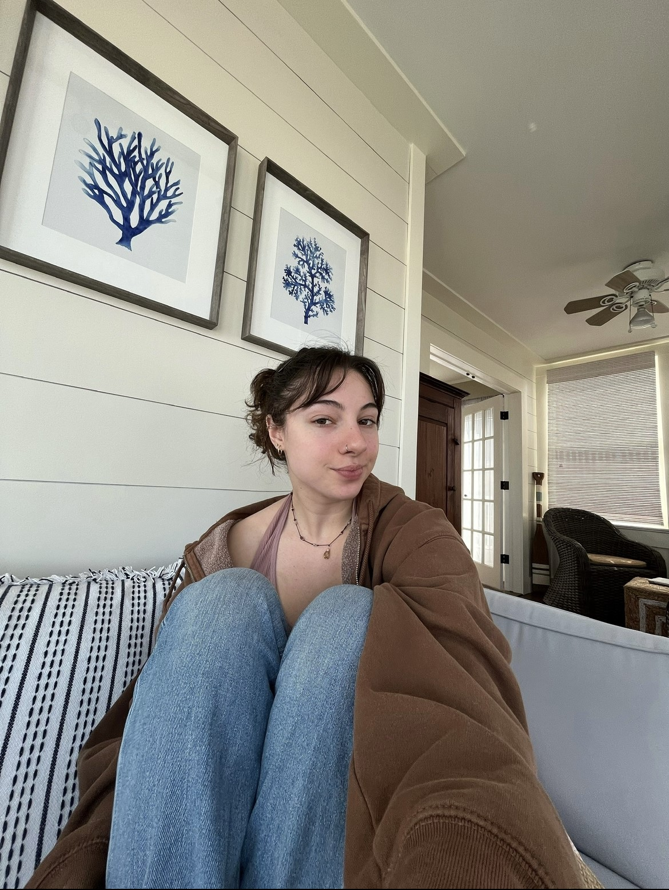

Hi, I'm Maddie!
Magazine, News and Digital Journalism Student
Buffalo, NY born and raised, Madelyn graduated from Williamsville South High School in 2021 and moved to Syracuse, NY to study journalism at Syracuse University, with an intended graduating year of 2025
Aside from studies, Madelyn has a history of musical theater and performing, with a love of singing, dancing, crochet and guitar.


 
